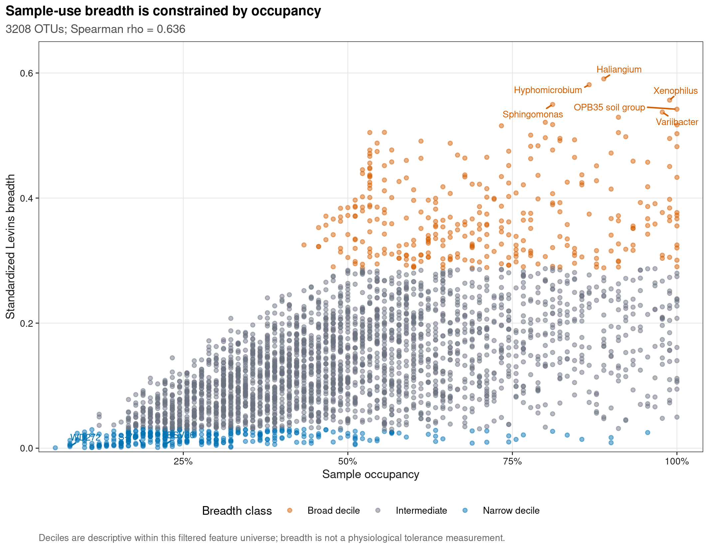
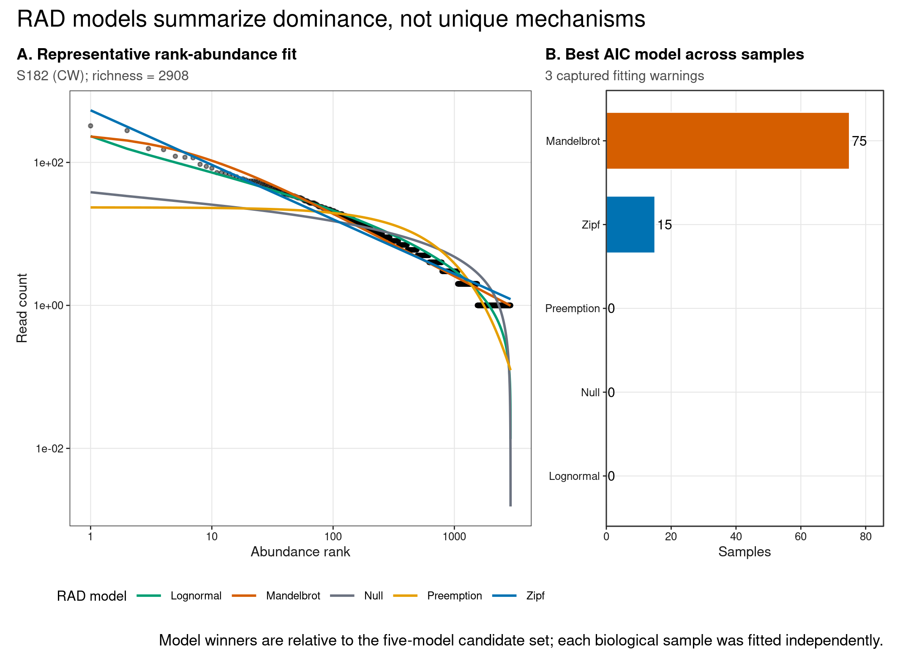
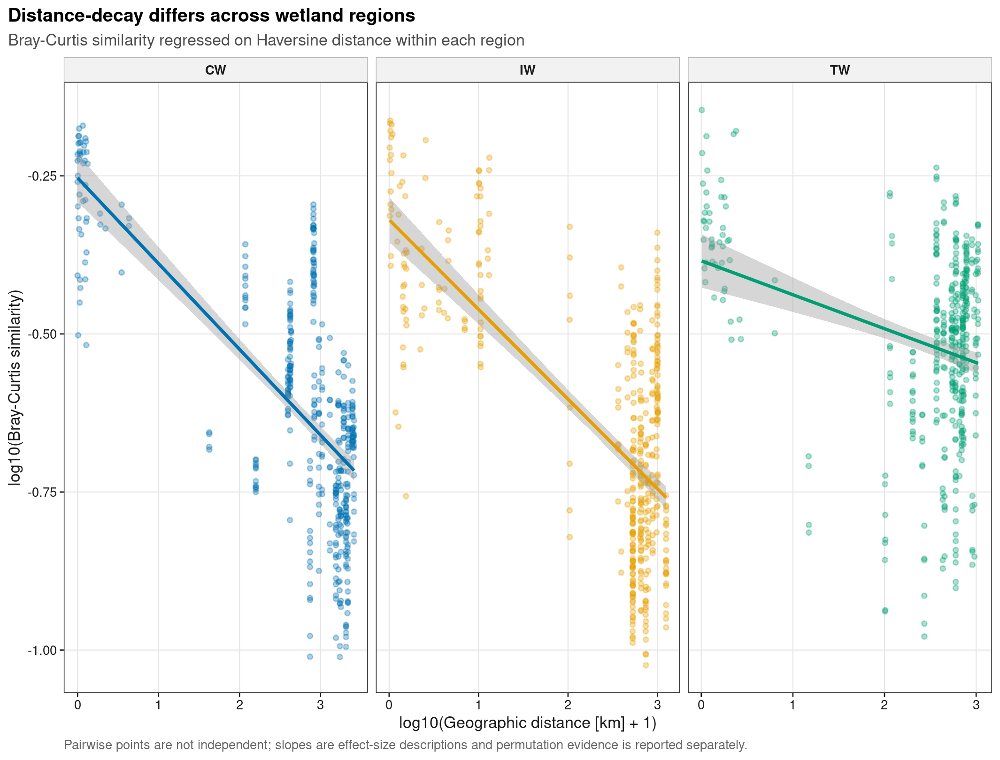
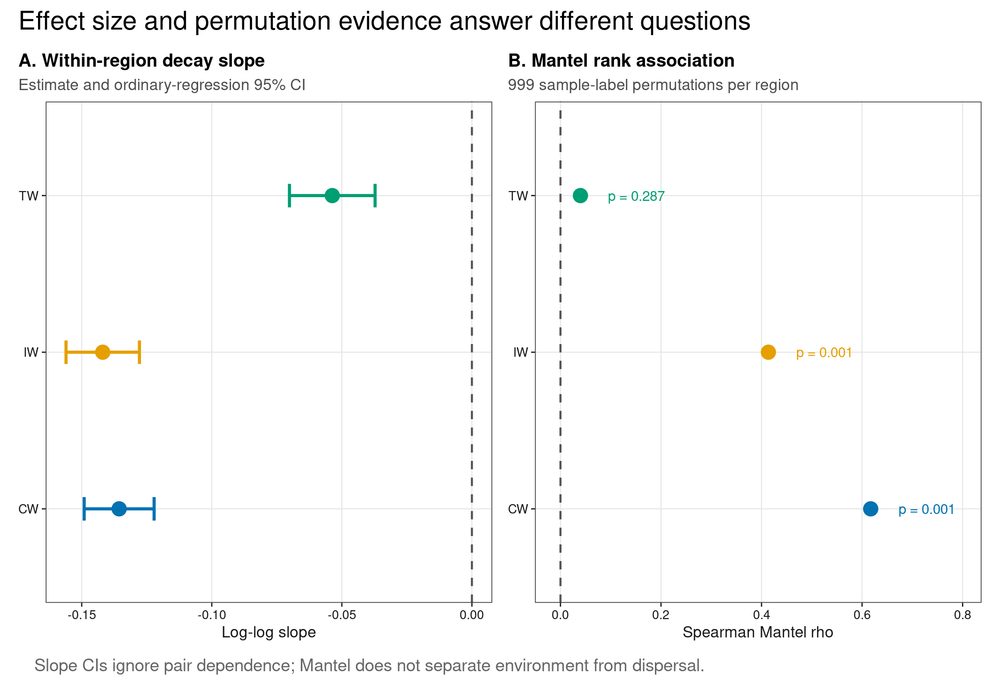

options(timeout = 600)
data_url <- "https://raw.githubusercontent.com/petemeng/microbiome-best-practices/3cb6a817e0c73ab7ecbec1cedc1ad80cbb9ecfaa/"
input_files <- c(
"data/small/environment.tsv",
"data/small/metadata.tsv",
"data/small/otutab.tsv",
"data/small/taxonomy.tsv"
)
for (path in input_files) {
dir.create(dirname(path), recursive = TRUE, showWarnings = FALSE)
if (!file.exists(path)) download.file(paste0(data_url, path), path, mode = "wb", quiet = TRUE)
}生态位宽度、物种丰度分布与距离衰减
生态位、丰度分布与距离衰减回答不同尺度问题
Martiny et al. (2011)展示了 bacterial beta-diversity 的空间尺度依赖；Hanson et al. (2012)系统梳理了 selection、dispersal、drift 与 diversification 如何共同塑造微生物生物地理格局。以下分析在公开湿地 16S 数据上对照 breadth–occupancy、rank-abundance fit、within-region distance-decay 和 effect size。
重要先给结论
Levins breadth、RAD 和 distance-decay 是三个不同层次的 pattern：taxon 在样本间分布得多均匀、单个样本内丰度怎样排序、不同地点的群落相似性怎样随距离变化。它们可以提出 generalist/specialist、dominance 与 dispersal/selection 假设，但任一张图都不能单独识别生态过程。
本页使用 microeco 2.0.0 的真实中国湿地数据。CW、IW、TW 各 30 个样本，但三组覆盖的地理距离和环境范围不同；因此 distance-decay 以 within-region slope 为主，pooled 结果只作审计，避免把 region composition difference 当成连续空间衰减。
距离衰减更陡，是否意味着扩散更受限？
地理距离与环境差异经常一起增加；负斜率可以来自扩散、环境筛选或区域组成差异，不能单独拆出迁移机制。三类湿地覆盖的距离范围不同，因此即使各自拟合一条线，也要先比较它们是否有共同支持的距离区间，再比较斜率。不能让一组短距离样本与另一组跨区域样本承担同一个对比。
零地理距离可能代表同地点的不同样本，不应为取对数而直接删除；本例加 1 的变换定义了近距离处的曲线形状，应保留单位说明。对于 sample-use breadth，均匀分布于已采样地点也不证明能耐受广泛环境，因为未采样环境没有进入计算。RAD 的候选模型胜出同样只是相对拟合，需先检查残差与模型间差距，再讨论可能的生态解释。
下载并读取本次分析的数据
需要 R，以及 ggplot2、ggrepel、knitr、patchwork、permute、ragg、scales、svglite、vegan。本次使用中国湿地的 OTU count 表、分类表和样本信息表，以及本次分析使用的实测环境变量或系统发育信息。
在一个新建的文件夹中运行以下代码，下载文件后按文中的顺序继续分析：
library(ggplot2)
library(vegan)
set.seed(20260740)
font_pub <- "sans"
pal_pub <- c(
blue = "#0072B2", orange = "#E69F00", green = "#009E73",
vermillion = "#D55E00", purple = "#CC79A7", sky = "#56B4E9",
yellow = "#F0E442", grey = "#6B7280"
)
scale_color_pub <- function(..., values = unname(pal_pub)) {
ggplot2::scale_color_manual(..., values = values)
}
scale_fill_pub <- function(..., values = unname(pal_pub)) {
ggplot2::scale_fill_manual(..., values = values)
}
theme_pub <- function(base_size = 10, base_family = font_pub) {
ggplot2::theme_bw(base_size = base_size, base_family = base_family) +
ggplot2::theme(
panel.grid.minor = ggplot2::element_blank(),
panel.grid.major = ggplot2::element_line(
colour = "#E6E6E6", linewidth = 0.25
),
axis.text = ggplot2::element_text(colour = "#1A1A1A"),
axis.title = ggplot2::element_text(colour = "#1A1A1A"),
axis.ticks = ggplot2::element_line(colour = "#1A1A1A", linewidth = 0.3),
plot.title.position = "plot",
plot.title = ggplot2::element_text(face = "bold", size = ggplot2::rel(1.15)),
plot.subtitle = ggplot2::element_text(colour = "#4D4D4D"),
plot.caption = ggplot2::element_text(colour = "#666666", hjust = 0),
strip.background = ggplot2::element_rect(
fill = "#F2F2F2", colour = "#B3B3B3", linewidth = 0.3
),
strip.text = ggplot2::element_text(face = "bold"),
legend.key = ggplot2::element_blank(), legend.position = "top"
)
}
save_pub <- function(
plot, file_base, width = 89, height = 70, units = "mm",
dpi = 600, write_svg = TRUE, write_tiff = TRUE,
base_family = font_pub
) {
dir.create(dirname(file_base), recursive = TRUE, showWarnings = FALSE)
ggplot2::ggsave(
paste0(file_base, ".pdf"), plot, width = width, height = height,
units = units, device = grDevices::cairo_pdf,
family = base_family, bg = "white"
)
if (write_svg) ggplot2::ggsave(
paste0(file_base, ".svg"), plot, width = width, height = height,
units = units, device = svglite::svglite, bg = "white"
)
ggplot2::ggsave(
paste0(file_base, ".png"), plot, width = width, height = height,
units = units, dpi = dpi, device = ragg::agg_png, bg = "white"
)
if (write_tiff) ggplot2::ggsave(
paste0(file_base, ".tiff"), plot, width = width, height = height,
units = units, dpi = dpi, device = ragg::agg_tiff,
compression = "lzw", bg = "white"
)
invisible(plot)
}从三件套读取，再对齐经纬度
read_keyed_tsv <- function(path) {
x <- readr::read_tsv(
path, show_col_types = FALSE, progress = FALSE,
name_repair = "minimal", na = character()
)
ids <- as.character(x[[1L]])
stopifnot(!anyDuplicated(ids))
out <- as.data.frame(x[-1L], check.names = FALSE)
rownames(out) <- ids
out
}
otutab_raw <- read_keyed_tsv("data/small/otutab.tsv")
taxonomy <- read_keyed_tsv("data/small/taxonomy.tsv")
metadata <- read_keyed_tsv("data/small/metadata.tsv")
environment <- read_keyed_tsv("data/small/environment.tsv")
otutab <- as.matrix(data.frame(
lapply(otutab_raw, as.integer), check.names = FALSE
))
rownames(otutab) <- rownames(otutab_raw)
metadata$Group <- factor(metadata$Group, levels = c("CW", "IW", "TW"))
otutab <- otutab[, rownames(metadata), drop = FALSE]
environment <- environment[rownames(metadata), , drop = FALSE]
clean_taxon <- function(x) {
x <- sub("^[A-Za-z]__", "", trimws(as.character(x)))
x[
is.na(x) | x == "" |
grepl("unclassified|unknown|unassigned|uncultured|metagenome", x,
ignore.case = TRUE)
] <- NA_character_
x
}
rank_names <- c(
"Kingdom", "Phylum", "Class", "Order", "Family", "Genus", "Species"
)
taxonomy_clean <- as.data.frame(
lapply(taxonomy[rownames(otutab), rank_names], clean_taxon),
check.names = FALSE
)
rownames(taxonomy_clean) <- rownames(otutab)
display_taxon <- apply(
taxonomy_clean[, rev(rank_names), drop = FALSE], 1L,
function(x) {
value <- x[!is.na(x)][1L]
if (length(value)) value else "Unclassified OTU"
}
)
names(display_taxon) <- rownames(taxonomy_clean)
stopifnot(
nrow(otutab) == 13628L,
ncol(otutab) == 90L,
sum(otutab) == 1619670L,
identical(colnames(otutab), rownames(metadata)),
identical(rownames(environment), rownames(metadata)),
all(stats::complete.cases(environment[, c("Latitude", "Longitude")]))
)
head(otutab[, 1:5])
head(taxonomy[, rank_names])
head(metadata)
head(environment[, c("Latitude", "Longitude")]) S1 S2 S3 S4 S5
OTU_4272 1 0 1 1 0
OTU_236 1 4 0 2 35
OTU_399 9 2 2 4 4
OTU_1556 5 18 7 3 2
OTU_32 83 9 19 8 102
OTU_706 0 1 0 1 0
Kingdom Phylum
OTU_4272 k__Bacteria p__Firmicutes
OTU_236 k__Bacteria p__Chloroflexi
OTU_399 k__Bacteria p__Proteobacteria
OTU_1556 k__Bacteria p__Acidobacteria
OTU_32 k__Archaea p__Miscellaneous Crenarchaeotic Group
OTU_706 k__Bacteria p__Actinobacteria
Class Order Family
OTU_4272 c__Bacilli o__Bacillales f__
OTU_236 c__ o__ f__
OTU_399 c__Betaproteobacteria o__Nitrosomonadales f__Nitrosomonadaceae
OTU_1556 c__Acidobacteria o__Subgroup 17 f__
OTU_32 c__ o__ f__
OTU_706 c__Actinobacteria o__Frankiales f__Nakamurellaceae
Genus Species
OTU_4272 g__ s__
OTU_236 g__ s__
OTU_399 g__ s__
OTU_1556 g__ s__
OTU_32 g__ s__
OTU_706 g__Nakamurella s__
Group Type Saline
S1 IW NE Non-saline soil
S2 IW NE Non-saline soil
S3 IW NE Non-saline soil
S4 IW NE Non-saline soil
S5 IW NE Non-saline soil
S6 IW NE Non-saline soil
Latitude Longitude
S1 52.96482 122.5635
S2 52.94877 122.6109
S3 52.94932 122.6099
S4 52.94900 122.6104
S5 52.95292 122.6057
S6 52.95300 122.6123下载完整 R 脚本。脚本包含数据下载、计算和图形导出。
首次使用时安装 R 包
install.packages(c(
"ggplot2", "ggrepel", "patchwork", "permute", "ragg", "readr",
"scales", "svglite", "systemfonts", "vegan"
))三种宏生态图不能互相代替
Levins 指数描述类群在样本间的分布均匀程度
对 taxon \(j\)，令 \(p_{ij}\) 为它在样本 \(i\) 的相对丰度占该 taxon 在所有样本总相对丰度的比例。Levins breadth 为
\[ B_j = \frac{1}{\sum_i p_{ij}^2}, \]
并标准化为
\[ B_j^{\ast}=\frac{B_j-1}{S-1}, \]
其中 \(S\) 是样本数。\(B_j^{\ast}\) 越接近 1，表示该 taxon 的相对丰度在样本间越均匀；越接近 0，表示集中于少数样本。
这里称它为 sample-use breadth，不直接称“生理生态位宽度”。只有把 occurrence 与实测环境梯度、资源利用或实验 tolerances 连接起来，才能升级为 environmental niche inference。
RAD 比较的是同一样本内的 abundance hierarchy
每个样本把非零 OTU abundance 从高到低排序。本页用 vegan::radfit() 比较五个候选模型：broken-stick/null、preemption、lognormal、Zipf 与 Zipf–Mandelbrot。AIC 最小者只是这个候选集内的相对最佳近似；不同模型胜出不等于唯一生态机制成立。
逐样本拟合保留 biological replicate。把 90 个样本先合并为一个 rank-abundance curve 会丢失 replicate variation，并把不同 library sizes 与 habitats 混在一起。
distance-decay 要先定义空间尺度
Bray–Curtis similarity \(S_{ij}=1-D_{ij}\) 与 Haversine geographic distance \(G_{ij}\) 的 log–log 回归为
\[ \log_{10}(S_{ij})=\alpha+\beta\log_{10}(G_{ij}+1), \]
负的 \(\beta\) 表示距离越远，群落越不相似。pairwise points 并不独立，因为同一样本参与多条 pair；因此 slope 用作 effect-size description，关联检验另用 sample-label permutation 的 Mantel statistic，并明确其限制。
混合地区分析可能掩盖地区内的距离衰减关系
如果 between-region pairs 同时具有更大距离和更低相似性，pooled regression 即使很陡，也不能说明每个 region 内都存在同样衰减。本页主图分面展示 CW、IW、TW 内部 pairs；pooled Mantel permutation 限制在 region blocks 内，并与三组独立结果一起报告。
深入：为什么 breadth 与 occupancy 天然相关
一个只出现在少量样本的 taxon 不可能拥有很高的 sample-use evenness，因此 Levins breadth 与 occupancy 的正相关有数学约束。breadth–occupancy scatter 的价值在于识别“相同 occupancy 下异常集中或异常均匀”的 taxa，而不是把高相关本身当作 generalist–specialist 生态机制证据。
分别估计生态位、丰度分布和距离衰减
计算标准化 Levins 指数
relative <- sweep(otutab, 2L, colSums(otutab), "/")
prevalence <- rowMeans(otutab > 0)
total_reads <- rowSums(otutab)
breadth_keep <- prevalence >= 0.05 & total_reads >= 100L
breadth_relative <- relative[breadth_keep, , drop = FALSE]
sample_share <- sweep(
breadth_relative, 1L, rowSums(breadth_relative), "/"
)
levins_b <- 1 / rowSums(sample_share^2)
standardized_b <- (levins_b - 1) / (ncol(otutab) - 1)
breadth_quantiles <- stats::quantile(
standardized_b, c(0.10, 0.90), names = FALSE
)
breadth_ledger <- data.frame(
FeatureID = names(standardized_b),
DisplayTaxon = display_taxon[names(standardized_b)],
Prevalence = prevalence[names(standardized_b)],
TotalReads = total_reads[names(standardized_b)],
LevinsB = unname(levins_b),
StandardizedBreadth = unname(standardized_b),
BreadthClass = ifelse(
standardized_b <= breadth_quantiles[[1L]], "Narrow decile",
ifelse(
standardized_b >= breadth_quantiles[[2L]],
"Broad decile", "Intermediate"
)
),
stringsAsFactors = FALSE
)
breadth_occupancy_rho <- stats::cor(
breadth_ledger$StandardizedBreadth,
breadth_ledger$Prevalence,
method = "spearman"
)
stopifnot(
nrow(breadth_ledger) == 3208L,
all(breadth_ledger$StandardizedBreadth >= 0 &
breadth_ledger$StandardizedBreadth <= 1)
)
summary(breadth_ledger$StandardizedBreadth) Min. 1st Qu. Median Mean 3rd Qu. Max.
0.0005788 0.0678290 0.1238397 0.1457250 0.1993611 0.5906111 每个样本独立拟合五类 RAD 模型
rad_models <- c("Null", "Preemption", "Lognormal", "Zipf", "Mandelbrot")
rad_aic <- matrix(
NA_real_, nrow = ncol(otutab), ncol = length(rad_models),
dimnames = list(colnames(otutab), rad_models)
)
rad_warning_ledger <- data.frame(
SampleID = character(), Message = character(), stringsAsFactors = FALSE
)
for (sample_id in colnames(otutab)) {
abundance <- otutab[, sample_id]
abundance <- abundance[abundance > 0]
fit <- withCallingHandlers(
vegan::radfit(abundance),
warning = function(warning_condition) {
warning_message <- conditionMessage(warning_condition)
warning_message <- if (
grepl("did not converge|算法没有聚合", warning_message)
) {
"GLM did not converge"
} else {
warning_message
}
rad_warning_ledger <<- rbind(
rad_warning_ledger,
data.frame(
SampleID = sample_id,
Message = warning_message,
stringsAsFactors = FALSE
)
)
invokeRestart("muffleWarning")
}
)
rad_aic[sample_id, ] <- vapply(
fit$models, stats::AIC, numeric(1)
)[rad_models]
}
rad_winner <- rad_models[max.col(-rad_aic, ties.method = "first")]
rad_delta_aic <- sweep(rad_aic, 1L, apply(rad_aic, 1L, min), "-")
rad_aic_ledger <- data.frame(
SampleID = rep(rownames(rad_aic), times = ncol(rad_aic)),
Group = rep(as.character(metadata[rownames(rad_aic), "Group"]),
times = ncol(rad_aic)),
Model = rep(colnames(rad_aic), each = nrow(rad_aic)),
AIC = as.vector(rad_aic),
DeltaAIC = as.vector(rad_delta_aic),
stringsAsFactors = FALSE
)
rad_model_summary <- data.frame(
Model = rad_models,
WinningSamples = as.integer(table(factor(rad_winner, levels = rad_models))),
MedianDeltaAIC = apply(rad_delta_aic, 2L, stats::median),
stringsAsFactors = FALSE
)
sample_richness <- colSums(otutab > 0)
rad_warning_samples <- unique(rad_warning_ledger$SampleID)
representative_candidates <- setdiff(
names(sample_richness), rad_warning_samples
)
representative_sample <- representative_candidates[
which.min(abs(
sample_richness[representative_candidates] -
stats::median(sample_richness[representative_candidates])
))
]
representative_abundance <- otutab[, representative_sample]
representative_abundance <- representative_abundance[
representative_abundance > 0
]
representative_fit <- suppressWarnings(
vegan::radfit(representative_abundance)
)
representative_rad <- do.call(rbind, lapply(rad_models, function(model) {
data.frame(
Rank = seq_along(representative_fit$models[[model]]$fitted.values),
Abundance = as.numeric(
representative_fit$models[[model]]$fitted.values
),
Model = model,
stringsAsFactors = FALSE
)
}))
representative_observed <- data.frame(
Rank = seq_along(representative_fit$y),
Abundance = as.numeric(representative_fit$y)
)
stopifnot(
nrow(rad_aic_ledger) == 450L,
sum(rad_model_summary$WinningSamples) == 90L,
all(is.finite(rad_aic_ledger$AIC)),
representative_sample %in% rownames(metadata)
)
rad_model_summary
rad_warning_ledger Model WinningSamples MedianDeltaAIC
Null Null 0 13316.2624
Preemption Preemption 0 13396.3649
Lognormal Lognormal 0 1427.4889
Zipf Zipf 15 792.5678
Mandelbrot Mandelbrot 75 0.0000
SampleID Message
1 S22 GLM did not converge
2 S165 GLM did not converge
3 S167 GLM did not converge计算地理距离，并估计地区内的距离衰减关系
haversine_km <- function(lat1, lon1, lat2, lon2) {
earth_radius <- 6371.0088
phi1 <- lat1 * pi / 180
phi2 <- lat2 * pi / 180
delta_phi <- (lat2 - lat1) * pi / 180
delta_lambda <- (lon2 - lon1) * pi / 180
a <- sin(delta_phi / 2)^2 +
cos(phi1) * cos(phi2) * sin(delta_lambda / 2)^2
2 * earth_radius * asin(pmin(1, sqrt(a)))
}
sample_ids <- rownames(metadata)
sample_index <- seq_along(sample_ids)
geographic_matrix <- outer(
sample_index, sample_index,
Vectorize(function(i, j) {
haversine_km(
environment$Latitude[[i]], environment$Longitude[[i]],
environment$Latitude[[j]], environment$Longitude[[j]]
)
})
)
dimnames(geographic_matrix) <- list(sample_ids, sample_ids)
bray_matrix <- as.matrix(vegan::vegdist(t(relative), method = "bray"))
pair_index <- which(upper.tri(bray_matrix), arr.ind = TRUE)
distance_pairs <- data.frame(
Sample1 = sample_ids[pair_index[, "row"]],
Sample2 = sample_ids[pair_index[, "col"]],
Group1 = as.character(metadata$Group[pair_index[, "row"]]),
Group2 = as.character(metadata$Group[pair_index[, "col"]]),
DistanceKm = geographic_matrix[pair_index],
BrayCurtis = bray_matrix[pair_index],
stringsAsFactors = FALSE
)
distance_pairs$Similarity <- pmax(1 - distance_pairs$BrayCurtis, 1e-6)
distance_pairs$Scope <- ifelse(
distance_pairs$Group1 == distance_pairs$Group2,
distance_pairs$Group1, "Between regions"
)
distance_pairs$LogDistance <- log10(distance_pairs$DistanceKm + 1)
distance_pairs$LogSimilarity <- log10(distance_pairs$Similarity)
within_pairs <- distance_pairs[
distance_pairs$Scope %in% levels(metadata$Group), , drop = FALSE
]
fit_distance_slope <- function(data, region) {
fit <- stats::lm(LogSimilarity ~ LogDistance, data = data)
interval <- stats::confint(fit, "LogDistance", level = 0.95)
data.frame(
Region = region,
Pairs = nrow(data),
MinDistanceKm = min(data$DistanceKm),
MaxDistanceKm = max(data$DistanceKm),
Slope = unname(stats::coef(fit)[["LogDistance"]]),
Lower = unname(interval[[1L]]),
Upper = unname(interval[[2L]]),
RSquared = summary(fit)$r.squared,
stringsAsFactors = FALSE
)
}
distance_slope_ledger <- rbind(
fit_distance_slope(distance_pairs, "Pooled"),
do.call(rbind, lapply(levels(metadata$Group), function(group_name) {
fit_distance_slope(
within_pairs[within_pairs$Scope == group_name, , drop = FALSE],
group_name
)
}))
)
set.seed(20260740)
blocked_permutations <- permute::shuffleSet(
nrow(metadata), nset = 999L,
control = permute::how(blocks = metadata$Group)
)
pooled_mantel <- vegan::mantel(
stats::as.dist(bray_matrix), stats::as.dist(geographic_matrix),
method = "spearman", permutations = blocked_permutations
)
mantel_ledger <- data.frame(
Region = "Pooled; permutations within region",
Samples = nrow(metadata),
MantelRho = unname(pooled_mantel$statistic),
PermutationP = pooled_mantel$signif,
stringsAsFactors = FALSE
)
for (group_index in seq_along(levels(metadata$Group))) {
group_name <- levels(metadata$Group)[[group_index]]
rows <- metadata$Group == group_name
set.seed(20260740L + group_index)
fit <- vegan::mantel(
stats::as.dist(bray_matrix[rows, rows]),
stats::as.dist(geographic_matrix[rows, rows]),
method = "spearman", permutations = 999L
)
mantel_ledger <- rbind(
mantel_ledger,
data.frame(
Region = group_name,
Samples = sum(rows),
MantelRho = unname(fit$statistic),
PermutationP = fit$signif,
stringsAsFactors = FALSE
)
)
}
stopifnot(
nrow(distance_pairs) == choose(90L, 2L),
nrow(within_pairs) == 3L * choose(30L, 2L),
max(distance_pairs$DistanceKm) > 4000,
all(distance_slope_ledger$Slope < 0),
all(mantel_ledger$PermutationP >= 1 / 1000 &
mantel_ledger$PermutationP <= 1)
)
distance_slope_ledger
mantel_ledger Region Pairs MinDistanceKm MaxDistanceKm Slope Lower Upper
1 Pooled 4005 0.00000000 4030.928 -0.17966159 -0.18652999 -0.17279319
2 CW 435 0.00000000 2590.647 -0.13561249 -0.14905760 -0.12216737
3 IW 435 0.01433949 1248.224 -0.14192181 -0.15603654 -0.12780708
4 TW 435 0.01259622 1052.052 -0.05368038 -0.07014131 -0.03721944
RSquared
1 0.39650367
2 0.47578989
3 0.47422973
4 0.08665552
Region Samples MantelRho PermutationP
1 Pooled; permutations within region 90 0.58463928 0.001
2 CW 30 0.61719236 0.001
3 IW 30 0.41363945 0.001
4 TW 30 0.03971385 0.287三类生态模式如何相互验证？
niche_distance_audit <- data.frame(
Dimension = c(
"Breadth estimand", "Breadth filter", "RAD replicate", "RAD choice",
"Geographic distance", "Pair dependence", "Spatial scale", "Process claim"
),
FragilePractice = c(
"Call sample evenness a physiological niche",
"Let singletons define specialists",
"Pool samples into one curve",
"Select a model without diagnostics",
"Use Euclidean degrees as kilometres",
"Run ordinary p-values on all pairs",
"Mix within- and between-region pairs",
"Equate decay with dispersal limitation"
),
UpgradedContract = c(
"Use sample-use breadth and state its limit",
"Prespecify prevalence and abundance gates",
"Fit each sample and retain winner variation",
"Report AIC ledger and convergence warnings",
"Use Haversine great-circle distance",
"Use slopes descriptively and permute labels",
"Lead with stratified curves and pooled audit",
"Require environment and process-aware evidence"
),
stringsAsFactors = FALSE
)
knitr::kable(
niche_distance_audit,
caption = "Audit contract for macroecological pattern claims"
)| Dimension | FragilePractice | UpgradedContract |
|---|---|---|
| Breadth estimand | Call sample evenness a physiological niche | Use sample-use breadth and state its limit |
| Breadth filter | Let singletons define specialists | Prespecify prevalence and abundance gates |
| RAD replicate | Pool samples into one curve | Fit each sample and retain winner variation |
| RAD choice | Select a model without diagnostics | Report AIC ledger and convergence warnings |
| Geographic distance | Use Euclidean degrees as kilometres | Use Haversine great-circle distance |
| Pair dependence | Run ordinary p-values on all pairs | Use slopes descriptively and permute labels |
| Spatial scale | Mix within- and between-region pairs | Lead with stratified curves and pooled audit |
| Process claim | Equate decay with dispersal limitation | Require environment and process-aware evidence |
过滤后保留 3208 个 OTU；standardized breadth 中位数为 0.124，与 occupancy 的 Spearman \(\rho=\) 0.636。这个相关的一部分来自数学约束，不能单独支持 generalist–specialist 机制。
RAD 候选集中，Mandelbrot 在 75/90 个样本中 AIC 最低；拟合捕获并保留了 3 条 warning。warning 是诊断信息，不能因最终有一条曲线就删除。
within-region log–log slopes 分别为 CW -0.136、IW -0.142、TW -0.054。三组 slope 都为负，但 effect size 和 Mantel evidence 不一致，说明 pooled distance-decay 不能替代分层检查。
区分三类生态模式的证据范围
图 1：比较样本分布均匀程度与检出率
breadth_colours <- c(
"Narrow decile" = pal_pub[["blue"]],
"Intermediate" = pal_pub[["grey"]],
"Broad decile" = pal_pub[["vermillion"]]
)
narrow_label_pool <- head(
breadth_ledger[order(breadth_ledger$StandardizedBreadth), ], 40L
)
narrow_label_pool <- narrow_label_pool[
!duplicated(narrow_label_pool$DisplayTaxon),
]
narrow_labels <- head(
narrow_label_pool[order(nchar(narrow_label_pool$DisplayTaxon)), ], 3L
)
broad_labels <- head(
breadth_ledger[order(-breadth_ledger$StandardizedBreadth), ], 6L
)
label_breadth <- rbind(narrow_labels, broad_labels)
breadth_plot <- ggplot(
breadth_ledger,
aes(x = Prevalence, y = StandardizedBreadth, colour = BreadthClass)
) +
geom_point(size = 1.1, alpha = 0.48) +
ggrepel::geom_text_repel(
data = label_breadth,
aes(label = DisplayTaxon),
family = font_pub, size = 2.35, max.overlaps = Inf,
min.segment.length = 0, show.legend = FALSE
) +
scale_colour_manual(values = breadth_colours) +
scale_x_continuous(
labels = scales::label_percent(), limits = c(0.04, 1.03),
expand = expansion(mult = c(0.01, 0.01))
) +
scale_y_continuous(
limits = c(0, max(breadth_ledger$StandardizedBreadth) * 1.08),
expand = expansion(mult = c(0.01, 0.02))
) +
labs(
title = "Sample-use breadth is constrained by occupancy",
subtitle = sprintf(
"%d OTUs; Spearman rho = %.3f",
nrow(breadth_ledger), breadth_occupancy_rho
),
x = "Sample occupancy", y = "Standardized Levins breadth",
colour = "Breadth class",
caption = "Deciles are descriptive within this filtered feature universe; breadth is not a physiological tolerance measurement."
) +
theme_pub(base_size = 8.4) +
theme(legend.position = "bottom")
save_pub(
breadth_plot, "figures/40-niche-breadth", width = 180, height = 140
)
breadth_plot
图 2：representative RAD 与 90 个样本的 model winners
rad_colours <- c(
"Null" = pal_pub[["grey"]], "Preemption" = pal_pub[["orange"]],
"Lognormal" = pal_pub[["green"]], "Zipf" = pal_pub[["blue"]],
"Mandelbrot" = pal_pub[["vermillion"]]
)
rad_curve_panel <- ggplot() +
geom_point(
data = representative_observed,
aes(x = Rank, y = Abundance), size = 0.75, alpha = 0.45
) +
geom_line(
data = representative_rad,
aes(x = Rank, y = Abundance, colour = Model), linewidth = 0.65
) +
scale_x_log10() +
scale_y_log10() +
scale_colour_manual(values = rad_colours) +
labs(
title = "A. Representative rank-abundance fit",
subtitle = sprintf(
"%s (%s); richness = %d",
representative_sample, metadata[representative_sample, "Group"],
sample_richness[[representative_sample]]
),
x = "Abundance rank", y = "Read count", colour = "RAD model"
) +
theme_pub(base_size = 7.8) +
theme(legend.position = "bottom")
rad_winner_panel <- ggplot(
rad_model_summary,
aes(x = reorder(Model, WinningSamples), y = WinningSamples, fill = Model)
) +
geom_col(width = 0.68, colour = "white", linewidth = 0.3) +
geom_text(
aes(label = WinningSamples), hjust = -0.15,
family = font_pub, size = 2.7
) +
coord_flip(clip = "off") +
scale_fill_manual(values = rad_colours) +
scale_y_continuous(
limits = c(0, max(rad_model_summary$WinningSamples) * 1.14),
expand = c(0, 0)
) +
labs(
title = "B. Best AIC model across samples",
subtitle = sprintf("%d captured fitting warnings", nrow(rad_warning_ledger)),
x = NULL, y = "Samples"
) +
theme_pub(base_size = 7.8) +
theme(legend.position = "none")
rad_plot <- patchwork::wrap_plots(
rad_curve_panel, rad_winner_panel, nrow = 1L, widths = c(1.25, 0.75)
) +
patchwork::plot_annotation(
title = "RAD models summarize dominance, not unique mechanisms",
caption = "Model winners are relative to the five-model candidate set; each biological sample was fitted independently."
)
save_pub(
rad_plot, "figures/40-rank-abundance-models",
width = 180, height = 132
)
rad_plot
图 3：within-region geographic distance-decay
region_colours <- c(
"CW" = pal_pub[["blue"]],
"IW" = pal_pub[["orange"]],
"TW" = pal_pub[["green"]]
)
within_pairs$Scope <- factor(
within_pairs$Scope, levels = c("CW", "IW", "TW")
)
distance_decay_plot <- ggplot(
within_pairs,
aes(x = LogDistance, y = LogSimilarity, colour = Scope)
) +
geom_point(size = 0.9, alpha = 0.32) +
geom_smooth(method = "lm", se = TRUE, linewidth = 0.8) +
facet_wrap(~Scope, scales = "free_x") +
scale_colour_manual(values = region_colours) +
labs(
title = "Distance-decay differs across wetland regions",
subtitle = "Bray-Curtis similarity regressed on Haversine distance within each region",
x = "log10(Geographic distance [km] + 1)",
y = "log10(Bray-Curtis similarity)", colour = "Region",
caption = "Pairwise points are not independent; slopes are effect-size descriptions and permutation evidence is reported separately."
) +
theme_pub(base_size = 8.2) +
theme(legend.position = "none")
save_pub(
distance_decay_plot, "figures/40-distance-decay",
width = 180, height = 137
)
distance_decay_plot
图 4：slope 与 permutation evidence 并列审计
plot_slopes <- distance_slope_ledger[
distance_slope_ledger$Region != "Pooled",
]
slope_panel <- ggplot(
plot_slopes,
aes(x = Slope, y = Region, colour = Region)
) +
geom_vline(xintercept = 0, linetype = 2, colour = "#555555") +
geom_errorbarh(
aes(xmin = Lower, xmax = Upper), height = 0.15, linewidth = 0.75
) +
geom_point(size = 3) +
scale_colour_manual(values = region_colours) +
labs(
title = "A. Within-region decay slope",
subtitle = "Estimate and ordinary-regression 95% CI",
x = "Log-log slope", y = NULL
) +
theme_pub(base_size = 8.0) +
theme(legend.position = "none")
plot_mantel <- mantel_ledger[mantel_ledger$Region %in% c("CW", "IW", "TW"), ]
mantel_panel <- ggplot(
plot_mantel,
aes(x = MantelRho, y = Region, colour = Region)
) +
geom_vline(xintercept = 0, linetype = 2, colour = "#555555") +
geom_point(size = 3) +
geom_text(
aes(label = sprintf("p = %.3f", PermutationP)),
nudge_x = 0.055, hjust = 0, family = font_pub, size = 2.5
) +
scale_colour_manual(values = region_colours) +
scale_x_continuous(
limits = c(min(0, min(plot_mantel$MantelRho) - 0.05),
max(plot_mantel$MantelRho) + 0.18)
) +
labs(
title = "B. Mantel rank association",
subtitle = "999 sample-label permutations per region",
x = "Spearman Mantel rho", y = NULL
) +
theme_pub(base_size = 8.0) +
theme(legend.position = "none")
distance_audit_plot <- patchwork::wrap_plots(
slope_panel, mantel_panel, nrow = 1L
) +
patchwork::plot_annotation(
title = "Effect size and permutation evidence answer different questions",
caption = "Slope CIs ignore pair dependence; Mantel does not separate environment from dispersal.",
theme = theme(
plot.caption = element_text(
family = font_pub, colour = "#666666", hjust = 0,
margin = margin(t = 5, r = 4, b = 2, l = 8)
)
)
)
save_pub(
distance_audit_plot, "figures/40-distance-decay-audit",
width = 180, height = 125
)
distance_audit_plot
result_dir <- "results/40-niche-distance-decay"
dir.create(result_dir, recursive = TRUE, showWarnings = FALSE)
utils::write.table(
breadth_ledger,
file.path(result_dir, "niche-breadth-ledger.tsv"),
sep = "\t", quote = FALSE, row.names = FALSE
)
utils::write.table(
rad_aic_ledger,
file.path(result_dir, "rad-model-ledger.tsv"),
sep = "\t", quote = FALSE, row.names = FALSE
)
utils::write.table(
rad_warning_ledger,
file.path(result_dir, "rad-warning-ledger.tsv"),
sep = "\t", quote = FALSE, row.names = FALSE
)
utils::write.table(
distance_slope_ledger,
file.path(result_dir, "distance-decay-slopes.tsv"),
sep = "\t", quote = FALSE, row.names = FALSE
)
utils::write.table(
mantel_ledger,
file.path(result_dir, "distance-mantel-ledger.tsv"),
sep = "\t", quote = FALSE, row.names = FALSE
)
expected_bases <- c(
"figures/40-niche-breadth",
"figures/40-rank-abundance-models",
"figures/40-distance-decay",
"figures/40-distance-decay-audit"
)
expected_files <- as.vector(outer(
expected_bases, c(".pdf", ".svg", ".png", ".tiff"), paste0
))
stopifnot(
all(file.exists(expected_files)),
nrow(breadth_ledger) == 3208L,
nrow(rad_aic_ledger) == 450L,
sum(rad_model_summary$WinningSamples) == 90L,
nrow(distance_pairs) == 4005L,
nrow(within_pairs) == 1305L,
nrow(mantel_ledger) == 4L,
all(plot_slopes$Slope < 0)
)
注意常见坑：审稿人会追问的十件事
- 把 sample-use breadth 写成生理 tolerance：没有环境梯度或实验测量时不能这样升级。
- 让 singleton 定义 specialist：先固定最低 prevalence/abundance，并报告过滤影响。
- 忽略 breadth–occupancy 数学耦合：相关不自动等于生态机制。
- 合并样本后只拟合一条 RAD：必须保留 sample-level replicate variation。
- 只报 AIC winner：同时保留候选集、\(\Delta\)AIC 和 convergence warnings。
- 经纬度直接用 Euclidean distance：跨数百公里时应用 great-circle distance。
- 把 4,005 个 pairs 当独立观测：普通回归 p-value 和 CI 会过度乐观。
- 混合 within/between-region pairs：先分层画图，再审计 pooled result。
- Mantel 显著就写 dispersal limitation：环境空间自相关可产生同一 pattern。
- 忽略可比空间范围：不同 region 的 slope 比较还需匹配 distance support。
报告生态位与距离衰减的方法与限制
The OTU table, taxonomy and metadata were read independently and aligned by sample identifier; latitude and longitude were obtained from the environment table distributed with the same dataset. Sample-use breadth was calculated for OTUs with prevalence ≥5% and total abundance ≥100 reads (3,208 OTUs). Relative abundances across the 90 samples were converted to taxon-specific sample shares, and Levins’ index was standardized to [0,1]. Narrow and broad labels denoted the lower and upper within-dataset deciles and were treated descriptively. Rank-abundance distributions were fitted separately in all 90 samples using broken-stick/null, preemption, lognormal, Zipf and Zipf–Mandelbrot models in
vegan; AIC, \(\Delta\)AIC, the best candidate and all fitting warnings were retained. Geographic distances were computed using the Haversine formula, community dissimilarity using Bray–Curtis, and within-region distance-decay as \(\log_{10}(1-D_{BC})\) versus \(\log_{10}(G+1)\). Slopes were reported as descriptive effect sizes because pairs share samples. Spearman Mantel associations used 999 sample-label permutations within each region; the pooled audit restricted permutations within region blocks. Random seeds were fixed at 20260740–20260743.
将生态位与距离衰减用于自己的研究
otutab <- read_keyed_tsv("your_data/otutab.tsv")
taxonomy <- read_keyed_tsv("your_data/taxonomy.tsv")
metadata <- read_keyed_tsv("your_data/metadata.tsv")
environment <- read_keyed_tsv("your_data/environment.tsv")
# 必改：经纬度列与主分层列。
latitude <- environment$YourLatitudeColumn
longitude <- environment$YourLongitudeColumn
metadata$Group <- factor(metadata$YourRegionColumn)
# 必须在看结果前固定：
prevalence_cutoff <- 0.05
total_read_cutoff <- 100L若没有经纬度，可以计算预先定义的 environmental distance，但不能继续把横轴写成 geographic distance。若是时间序列或 repeated measures，应在 subject/site 内定义 pairs 或用 mixed/spatial model；若不同区域的 distance range 几乎不重叠，不宜直接比较 slope 大小。
参考
- Levins R. Evolution in Changing Environments: Some Theoretical Explorations. Princeton University Press; 1968.
- Wilson JB. Methods for fitting dominance/diversity curves. Journal of Vegetation Science. 1991;2:35–46. https://doi.org/10.2307/3235896
- Martiny JBH, Eisen JA, Penn K, Allison SD, Horner-Devine MC. Drivers of bacterial beta-diversity depend on spatial scale. Proceedings of the National Academy of Sciences. 2011;108:7850–7854. https://doi.org/10.1073/pnas.1016308108
- Hanson CA, Fuhrman JA, Horner-Devine MC, Martiny JBH. Beyond biogeographic patterns: processes shaping the microbial landscape. Nature Reviews Microbiology. 2012;10:497–506. https://doi.org/10.1038/nrmicro2795
- Nekola JC, White PS. The distance decay of similarity in biogeography and ecology. Journal of Biogeography. 1999;26:867–878. https://doi.org/10.1046/j.1365-2699.1999.00305.x
- An J, Liu C, Wang Q, et al. Soil bacterial community structure in Chinese wetlands. Geoderma. 2019;337:290–299. https://doi.org/10.1016/j.geoderma.2018.09.035
- Liu C, Cui Y, Li X, Yao M. microeco: an R package for data mining in microbial community ecology. FEMS Microbiology Ecology. 2021;97:fiaa255. https://doi.org/10.1093/femsec/fiaa255